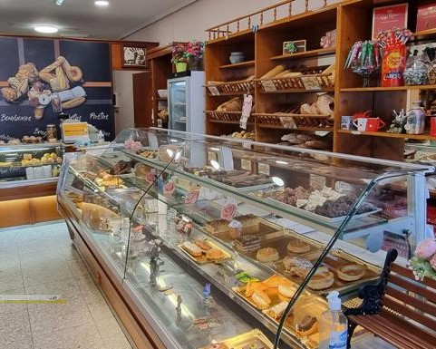
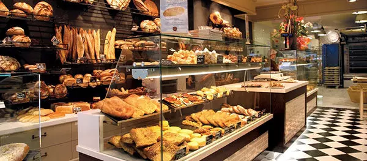
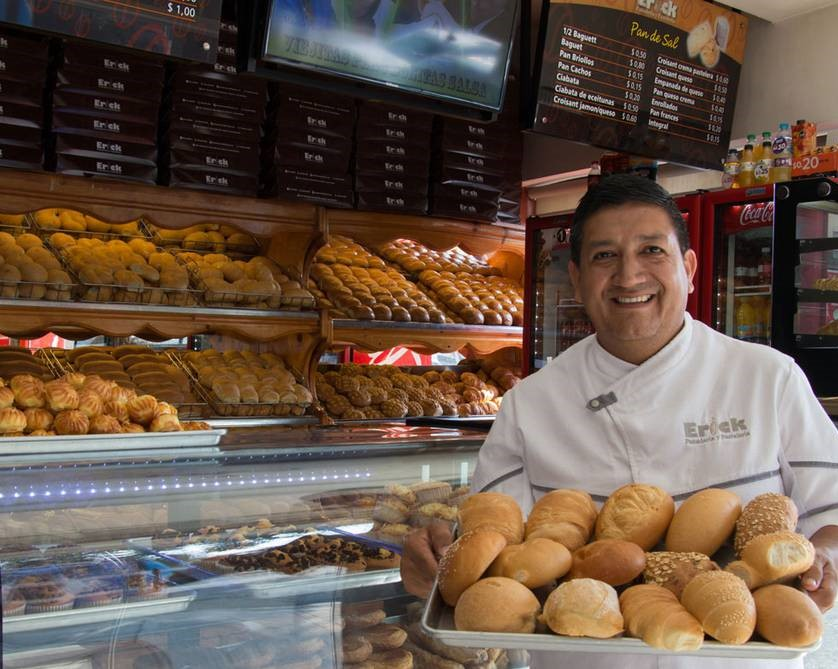

Tegucigalpa
 Nuestro centro de operaciones, años de trabajo acumulados entre sus paredes lo avalan
con la constante puesta al día de todo lo relacionado con nuestro trabajo
Nuestro centro de operaciones, años de trabajo acumulados entre sus paredes lo avalan
con la constante puesta al día de todo lo relacionado con nuestro trabajo
Ubicacion: centro de la ciudad
contacto: 23457686
Correo: info@Barery-panaderia-tgu.com
San pedro sula
 Casi cien años de historia al servicio de nuestros vecinos y clientes, agradecidos de su confianza y entregados a su disfrute en la degustación de nuestros productos.
Ubicacion: calle 13, dentro del parlamento
contacto: 987634523
Correo: info@Barery-panaderia-sps.com
Copan
 Nuestra Panadería, es una típica tahona artesanal, manteniendo sus típicas y naturales costumbres panaderas, pero evolucionando con las nuevas tecnologías y las mejores materias primas, para así poder dar un mayor servicio y calidad en sus productos
Ubicacion: local 23, mall multiplaza
contacto: 29872938
Correo: info@Barery-panaderia-cop.com
Comayagua
 También para adaptarnos aún más a las necesidades de nuestros clientes disponemos de una pequeña cafetería donde podréis disfrutar de todos nuestros productos al mejor precio y con un entorno familiar.
Ubicacion: C/Gral Gallarza 28, Calahorra La Rioja Honduras
contacto: 32875412
Correo: info@Barery-panaderia-cya.com
Intibuca
 Disponemos de un placer para los amantes del buen café; café 100% arábica ecológico, chocolates …
Disponemos de otro Despacho de Pan y Tienda en la calle Castilla nº 29, de Las Navas del Marqués,
en el que también se pueden encontrar nuestros productos
Disponemos de un placer para los amantes del buen café; café 100% arábica ecológico, chocolates …
Disponemos de otro Despacho de Pan y Tienda en la calle Castilla nº 29, de Las Navas del Marqués,
en el que también se pueden encontrar nuestros productos
Ubicacion: Calle Ontanilla 5. C.P. 31579 Carcar Navarra
contacto: 87649832, 63423432
Correo: info@Barery-panaderia-int.com
Choluteca
Gracias a nuestra constante renovación y adaptación a los nuevos medios, hemos podido acercar nuestros productos con la misma calidad a otros puntos de nuestro entorno.
Ubicacion: Plaza Salvador 12, Azagra, 31560 Choluteca Honduras
contacto: 98023412
Correo: info@Barery-panaderia-cla.com
La Ceiba, Atlantida
 Aparte de en la provincia de Ávila, servimos a (prácticamente) toda la sierra de Guadarrama,
principalmente a restauración y hostelería, aunque puedes también encontrarnos en varios puntos de venta.
Aparte de en la provincia de Ávila, servimos a (prácticamente) toda la sierra de Guadarrama,
principalmente a restauración y hostelería, aunque puedes también encontrarnos en varios puntos de venta.
Ubicacion: Plaza Sarasate 2, Azagra, 31560 Navarra Honduras
contacto: 87326598
Correo: info@Barery-panaderia-cei.com
Islas de la bahia
Podrás reconocer los establecimientos donde están disponibles todos nuestros productos,
mediante un cartel identificativo con nuestra marca, que los reconoce como clientes.
Ubicacion: C/Pradillo,4 Rincón de Soto, 31560 La Rioja Honduras
contacto: 21438906
Correo: info@Barery-panaderia-Iba.com